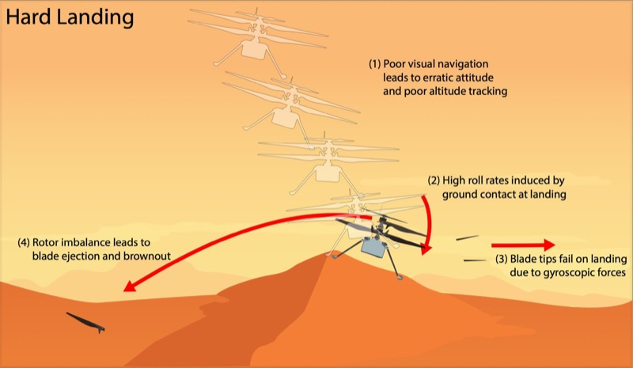

January 2024 · Ingenuity, Flight 72
What actually broke Ingenuity
JPL’s reconstruction of the final flight reads as a blade failure, but the chain starts earlier — with a state estimate that degraded over featureless sand. Why gyroscopic precession finished the job, and where the accident meets my own work on landing and contact.